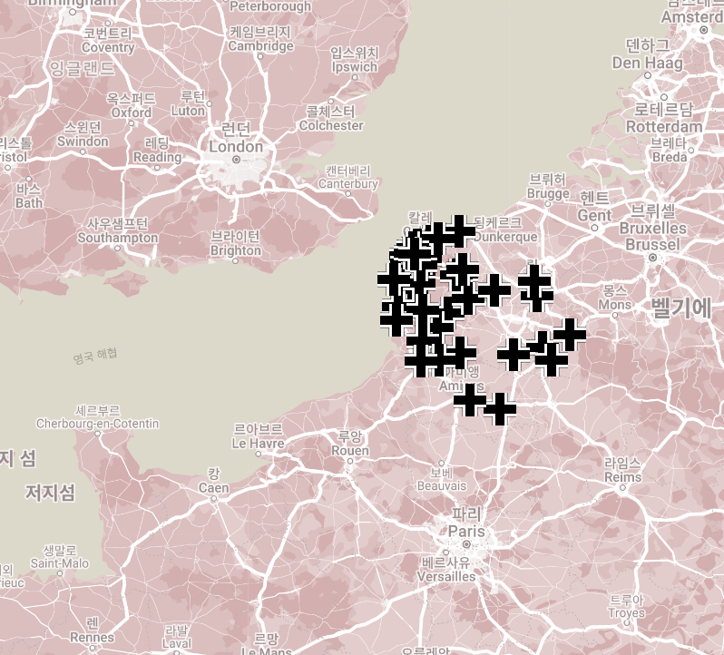
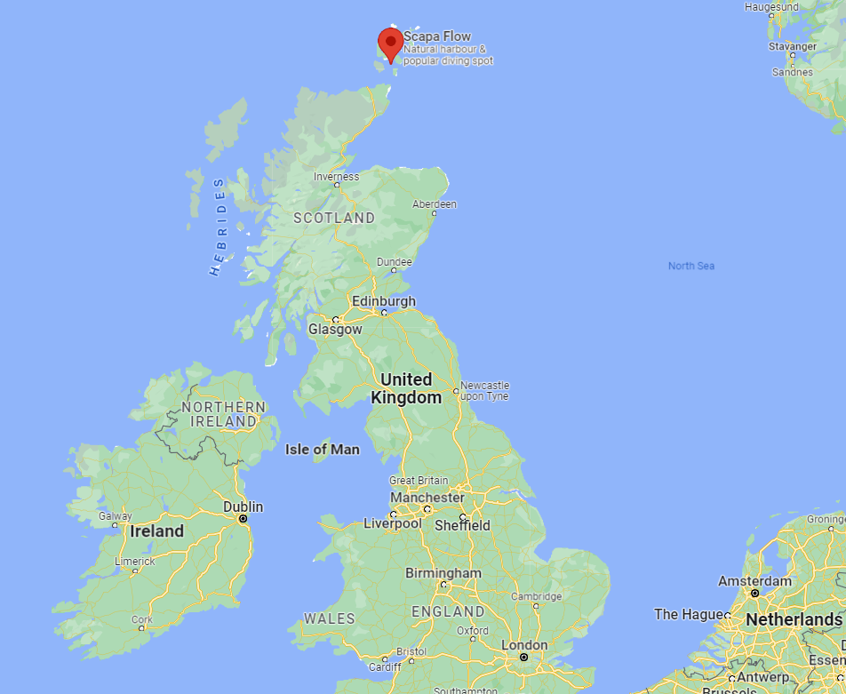
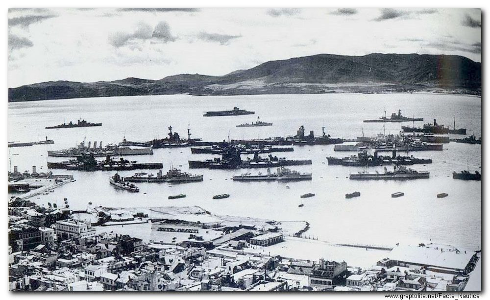
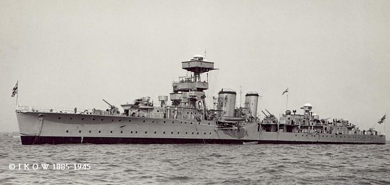
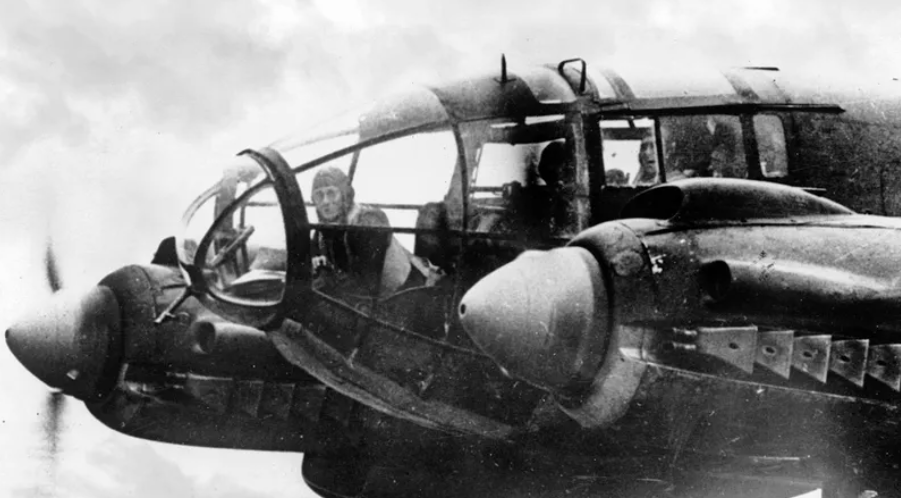
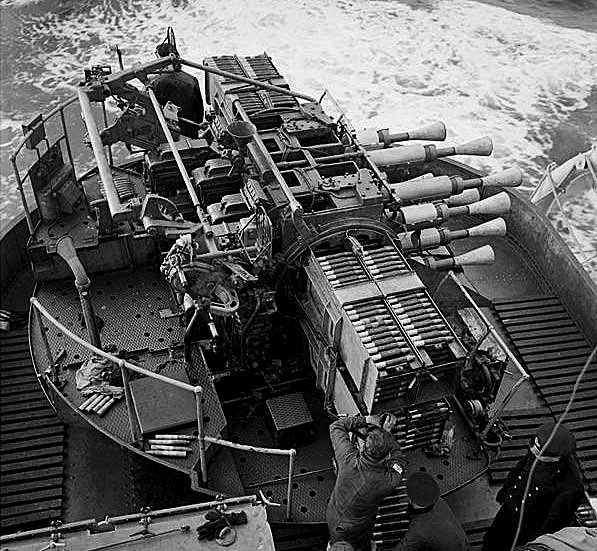
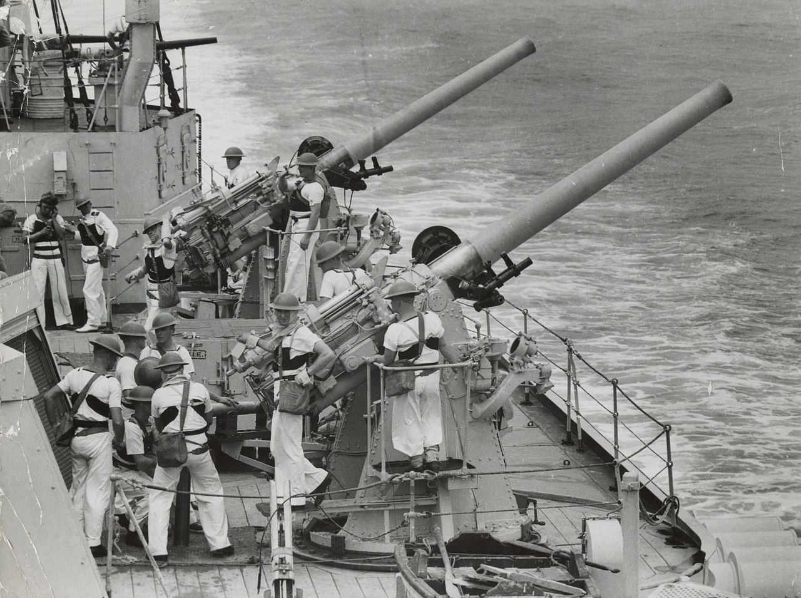
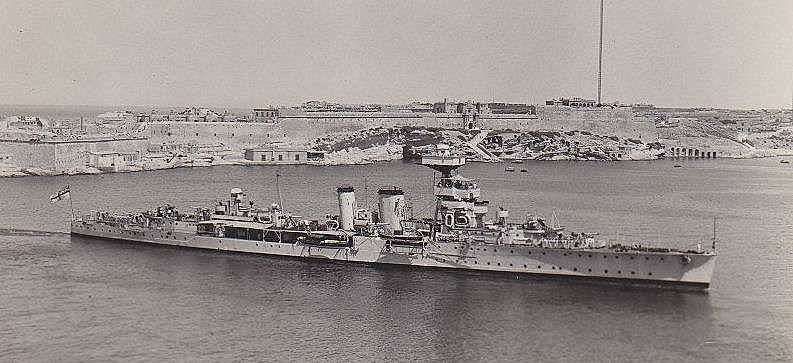

레이더 개발 이야기 (18) - 공습도 예보가 되나요?
게시: 2023-01-26T06:30:51+09:00
<폭격기 노는 곳에 전함아 가지마라> 로열 에어포스는 레이더의 종주군(?)답게 다우딩 장군의 세심한 감독하에 체계적인 레이더 경보 및 그에 따른 요격 체계를 갖춤. 그러나 로열 네이비는 레이더를 곁가지로 시작했고 또 공군처럼 도시와 공장을 지키는 것이 아니라 함대 방공만 하면 되었으므로 체계적인 요격 체계를 갖출 생각을 아예 하지 않았음. 그러다보니 아랫것들끼리 알아서 체계를 만들어야 했음. 가령 1939년 9월, 사상 최초로 실전에서 레이더로 적기를 탐지한 전함 HMS Rodney는 120km 밖에서 독일 공군기들을 포착했고, 바로 옆에 항모 HMS Ark Royal이 있었으므로 요격 함재기들을 출격시킬 수 있었음. 그러나 안 했음. 레이더로 보아하니 다른 곳을 공습하러 가는 적기들인데 구태여 건드릴 필요가 없다고 판단했기 때문. 따라서 이건 레이더에 의한 최초의 해전으로는 기록되지 않음. 로열 네이비에게 항공전력은 매우 착잡한 요소. 전통의 해양 강국답게 영국의 방위는 로열 네이비의 전함들이 맡아야 하는데, 거함거포를 지향하는 영국 수상함대는 하루가 멀다고 발전하는 항공 전력에 취약하다는 지적이 꾸준히 있었음. 누구보다 이를 잘 알고 있던 로열 네이비는 그에 대응하기 위해서라도 적의 폭격기를 격추해줄 전투기 엄호를 위해 항공모함 도입에 적극적이었으나, 모든 함대에 항공모함을 배치할 수도 없는 노릇. 그래서 로열 네이비는 '아예 독일 공군기 사정권 밖에서 활동하겠다, 그리고 넓은 대양에서는 4만톤급 전함도 찾아내기 어렵다'라며 스스로를 위로. 그런데 WW2가 시작되고, 독일 공군 Luftwaffe는 예상보다 더 막강한 위력을 발휘하며 폴란드는 물론 프랑스까지 밀어붙임. 순식간에 네덜란드와 벨기에가 떨어지고 프랑스 Pas de Calais 지방까지 독일군 손에 떨어짐. 이렇게 빠드칼레 지방이 넘어가자 아직 덩케르크 철수 작전이 일어나기도 전부터도 이 일대의 기지에서 독일 폭격기들이 즉각 활동을 시작하여 영국 폭격을 시작.

(사진1은 1940년 프랑스 북부의 독일 공군기지들)
그런 공중 폭격에 대해 로열 네이비는 그냥 두 손 놓고 손가락을 빠는 수 밖에 없었는데, 더 큰 일이 벌어짐. 1940년 3월, 로열 네이비의 주요 군항 중 하나인 영국 스코틀랜드 북쪽에 있는 오크니(Orkney) 제도의 스카파 플로우(Scapa Flow) 기지에 독일 폭격기들이 날아든 것. '독일 공군기 사정권 밖에서 활동하겠다, 그리고 넓은 대양에서는 4만톤급 전함도 찾아내기 어렵다'라던 대응책이 한꺼번에 무효화되는 사건이 벌어진 것. 더 이상 영국 전함들에게는 숨을 곳이 없었고, 좁은 항구 내에 날 잡아잡수 하고 앉아 있던 전함들 머리 위로 폭탄이 떨어지게 된 전대미문의 위기가 발생.

(사진2는 오크니 제도의 스카파 플로우 위치)

(사진3이 WW2 중의 스카파 플로우)
<AA Cruiser란?> 함대의 대공 작전에서 조기 경보는 매우 중요한 요소. 바다에서건 군항에서건 군함의 수병들은 항상 전투 위치에 있는 것이 아님. WW2 당시 미해군 규정의 경우, 경보를 받고 선실이나 식당 등에 있던 수병들이 전투 위치까지 뛰어갈 때까지 최대 5분을 주었음. 그러나 아무리 견시(lookout)들이 열심히 하늘을 주시한다고 해도, 하늘은 넓고 비행기는 작으며, 흔히 하늘에는 구름이 끼어있음. 망원경으로 보면 수십 km 밖에서도 폭격기를 찾을 수 있다고 하지만, 수평선만 보면 되던 대항해 시대와는 달리 이젠 하늘 저 높은 곳까지 봐야 했으므로 눈과 망원경으로만 하늘을 쳐다보는 것에는 심각한 한계가 있었음. 미드웨이 해전에서 육안으로 적기를 경계했던 일본 함대는 미군기들이 습격해올 때 (미리 예상하고 기다렸음에도) 겨우 20km 밖에서야 미군기들을 포착할 수 있었음. 300km/h의 속도로 날아들던 돈틀리스 등의 미군기는 그로부터 딱 4분 만에 폭탄을 떨굴 수 있음. 물론 당시 일본 해군이야 잔뜩 긴장하고 아침부터 전원 전투 배치 상태였지만 그냥 항해 중이었다면 정말 무방비로 당할 수도 있는 것. 로열 네이비도 항공 전력에 대해 아무 준비가 없었던 것은 아님. WW1 중에 진수된 낡은 C-class 순양함들인 HMS Coventry와 HMS Curlew(5천톤, 29노트)에서 1935년부터는 구닥다리 6인치 주포들을 떼어내고 4인치 대공포 10문 등 대공포만 죽어라 장착한 대공순양함(anti-aircraft cruiser)이라는 새로운 함종으로 개조한 것. 더 중요한 것은 이들에게 대공 레이더 Type 79를 장착했다는 것.

(사진1이 HMS Curlew. 일반 순양함과는 달리 주포가 없는 것이 눈에 확 띔. 그러나 이렇게 대공 순양함에 대공포만 잔뜩 배치해놓으니 정작 이 대공 순양함을 적 수상함으로부터 보호할 일반 순양함이 별도로 필요하다는 것이 지적되어, 결국 이후의 대공 순양함에는 대공-대함 사격이 모두 가능한 양용포(dual-purpose gun)가 탑재됨.)

(사진2가 HMS Curlew 함교에 설치된 Type 79Z 레이더.)
Type 79는 70 kW의 전력에 45MHz의 낮은 주파수에 불과했지만 대략 74km 멀리 떨어진 항공기도 포착 가능. 당시 독일 주력 폭격기인 Ju-88의 속력이 최고 470km/h, 순항 370km/h였으니 대략 400km/h로 날아온다고 해도 레이더로는 11분 전에 포착 가능. 무엇보다 이젠 대충 눈으로 보고 고도를 가늠하는 것이 아니라 폭격기의 고도를 레이더로 정확하게 측정할 수 있게 된 것.
그리고 1940년 3월, 독일 폭격기들이 날아들던 스카파 플로우 해군 기지에는 바로 그 HMS Curlew가 있었음.

(사진3은 독일 폭격기 He-111) <공습도 예보가 되나요?> 1940년 3월, 스카파 플로우 해군 기지에 정박하고 있던 대공 순양함 HMS Curlew의 레이더(당시 명칭은 RDF, Radio Direction Finder) 장교 John R. Hodge 대위는 Type 79Z RDF 장치, 즉 레이더 스코프를 통해 남쪽 하늘 약 75km 지점에서 괴비행체를 포착. 뿐만 아니라 대략이나마 그 고도까지 파악. 당시의 조악한 전파 송수신기로는 해상도가 좋지 않았으나 스코프 상에 꽤 큰 깜빡이(blip)가 나타나는 것을 보면 저건 한 두대가 아니라 꽤 많은 수의 항공기라는 것을 알 수 있었음. 그는 즉각 함교에 연락하여 전체 함대를 향한 경계 깃발을 올림. 이어서 그는 해도에 그 깜빡이가 나타난 위치들을 그 발견 시간대별로 초단위로 표시. 이렇게 2~3번 점을 찍어보니 이 편대는 똑바로 스카파 플로우로 날아오는 것이 확실했고, 그 속도도 대략 350km/h 정도라는 것을 계산할 수 있었음. 홋지 대위는 즉각 노란색 신호기를 게양. 이는 5분 안에 적기 공습을 뜻하는 신호. 그 덕분에 9대의 쌍발 폭격기들이 스카파 플로우의 상공에 나타났을 때 로열 네이비 함대는 완전 무장 상태로 대기 중이었음. 뿐만 아니라 사거리 안에 들어오자마자 정확한 고도로 빗발처럼 대공포의 탄막을 쏘아올림. 가뜩이나 먼 거리를 날아오느라 돌아갈 연료가 간당간당했던 독일 폭격기들은 이렇게 시의적절한 반격을 예상하지 못했는지 그냥 돌아서서 바다 위에 폭탄을 던져버리고 회항. 당시 Type 79 레이더는 로열 네이비 안에서도 일부 아는 사람들만 알던 극비 장비. 그래서 많은 수병들은 대체 컬류 호에서 어떻게 독일 폭격기의 내습을 미리 알아낼 수 있었는지 모르고 있었음. 곧 함대 내에서는 '컬류에는 극비 장치가 되어 있어서 일기예보처럼 공습도 예보할 수 있다' 라는 소문이 돔.

(사진1은 영국 해군이 믿었던 대공포인 QF 2-pounder naval gun (일명 pom pom gun). 최대 4km 고도까지 분당 100발이 넘는 40mm 포탄을 쏘아올릴 수 있었으나... 결과적으로 잦은 탄걸림과 부족한 사정거리 등으로 인해 HMS Prince of Wales가 일본기에게 격침당하는데 큰 역할을 수행했다고 평가되고 40 mm Bofors gun으로 점차 교체되었음)

(사진2는 HMS Curlew에도 장착되었던 QF 4-inch naval gun Mk V 고사포. 대공용으로는 최대 사거리 8km. 이것도 원래 WW1 때부터 쓰던 대포를 개조한 것으로, 개조를 통해 앙각을 80도까지 올릴 수 있었으므로 대공포로 사용되었지만, 정작 장전을 위해서는 앙각을 다시 60도 이하로 내려야 했으므로 발사 속도가 형편 없었고 결국 좋은 대공포는 아니었음. 이 사진은 호주 해군 경순양함 HMAS Sydney에 장착된 모습.)

(사진3은 다시 HMS Curlew. 레이더 장착이라는 점에서는 좋은 평가를 받았으나, 별로 좋지 않은 대공화기인 10문의 QF 4-inch naval gun과 2문의 다연장 pom pom gun으로 무장했던 죄로, 결국 컬류는 1940년 5월, 노르웨이 해역에서 독일 공군 Ju-88에게 습격당해 격침됨. 다행히 사망자는 많지 않아 9명 사망.)